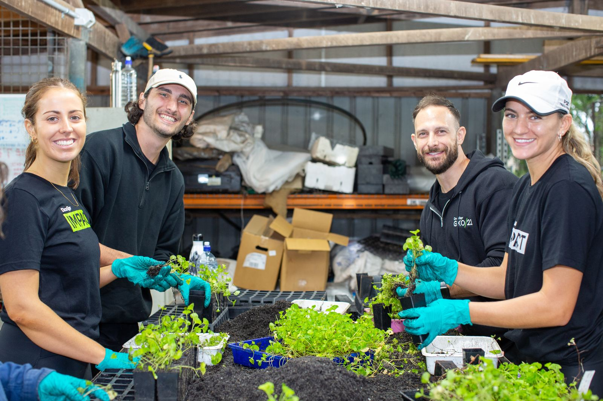
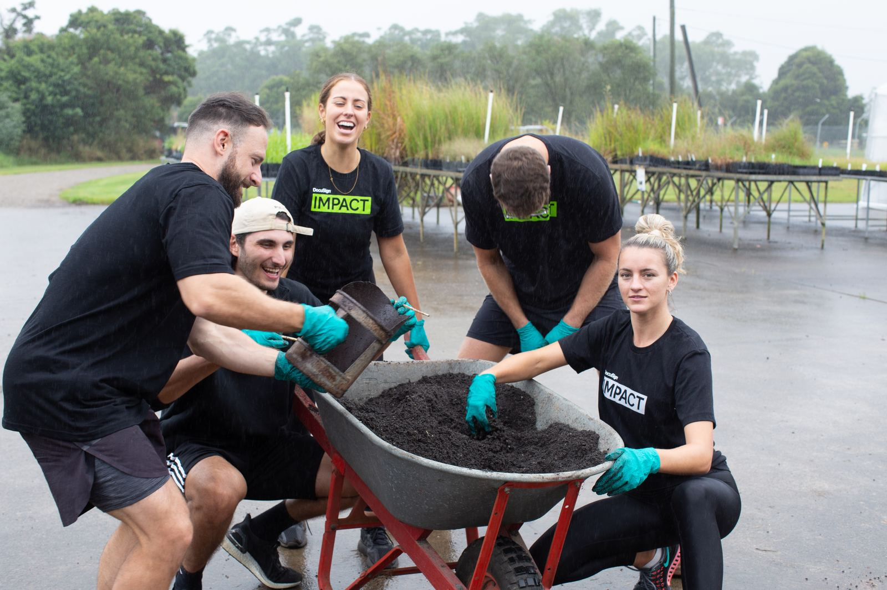
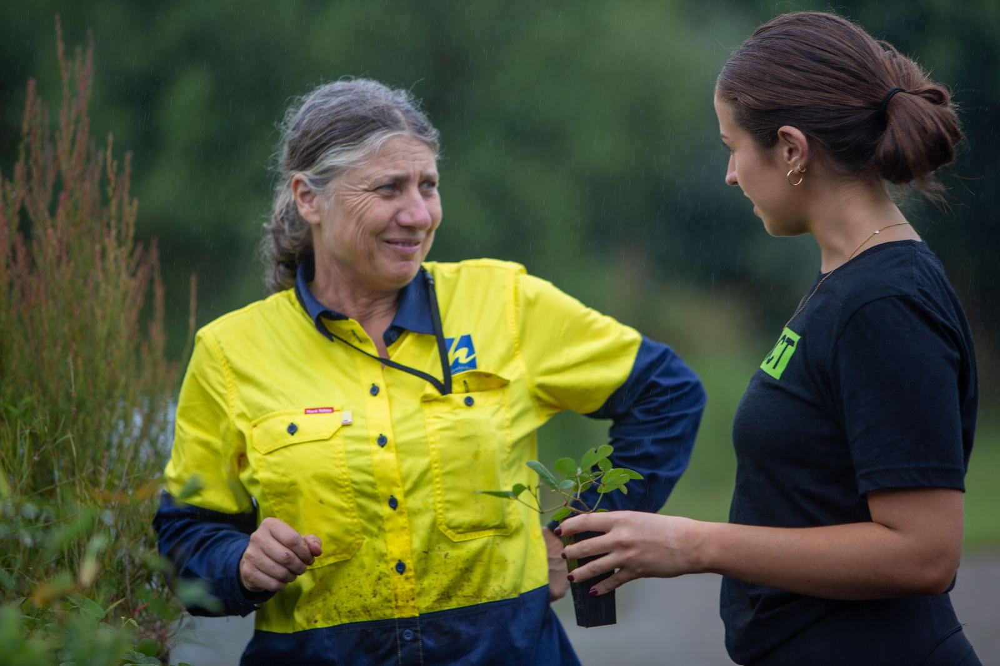
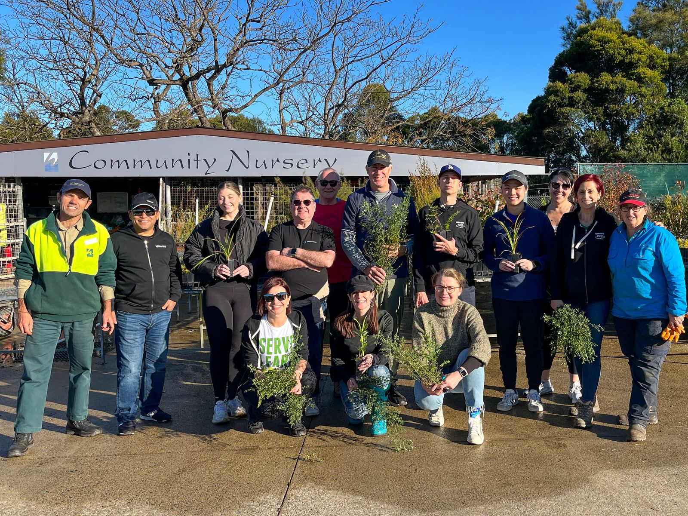
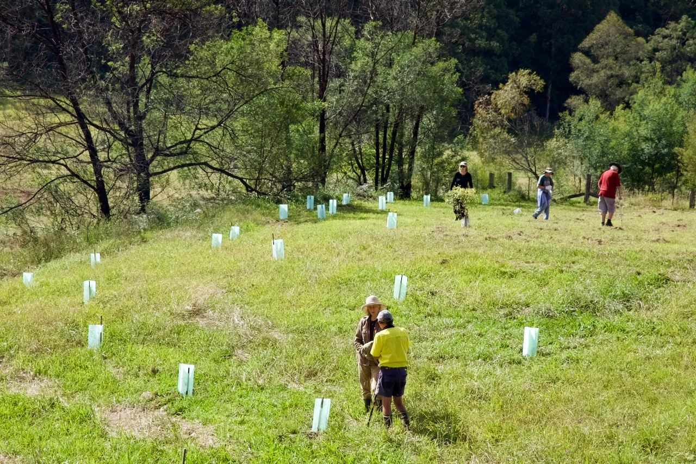
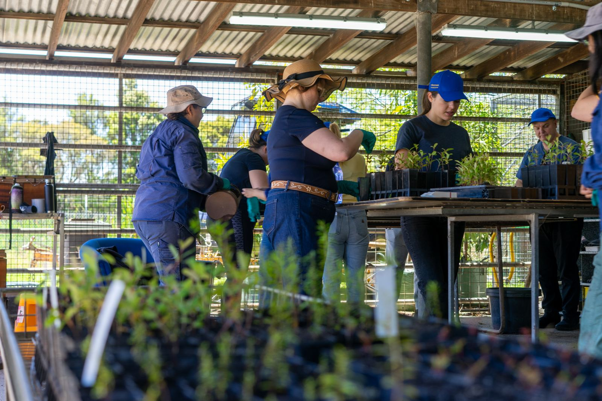

New South Wales sites
14 sites across New South Wales where your team can spend a day on the ground. 4 nurserys, 4 national parks, 3 parks, 1 conservation area, 1 reserve and 1 wetlands, between 7 and 112 km from the Sydney CBD. Pick one from the map or the list, then send us your dates from the form below.
- 1 Conservation Area
- 4 National Parks
- 4 Nurserys
- 3 Parks
- 1 Reserve
- 1 Wetlands
The map is zoomed to where the sites actually are; the small inset shows that area within New South Wales. Pin positions are approximate. Hover a pin to find it in the list, or tap one to jump straight to it.
14 sites
-
1
Belmont Nursery
119 Kalaroo Road, Belmont State Wetland Park, 2290
105 km from the Sydney CBD
Managed with Trees in Newcastle
-
2
Congwong Beach, Kamay-Botany Bay National Park
1532R Anzac Parade, 2038
14 km from the Sydney CBD
Managed with National Parks & Wildlife Service - NSW
-
3
Glenrock State Conservation Area
Yuelarbah Track, 2289
112 km from the Sydney CBD
Managed with Trees in Newcastle
-
4
Hawkesbury Community Nursery
10 Mulgrave Road, 2756
44 km from the Sydney CBD
Managed with Hawkesbury City Council
-
5
Lane Cove National Park
Koonjerie Picnic Area, Riverside Drive, 2067
10 km from the Sydney CBD
Managed with National Parks & Wildlife Service - NSW
-
6
Lane Cove National Park
River Road, 2067
10 km from the Sydney CBD
Managed with Friends of Lane Cove National Park
-
7
Magdala Park
Magdala Road, 2113
10 km from the Sydney CBD
Managed with National Parks & Wildlife Service - NSW
-
8
Middle Head - Gubbuh Gubbuh
2 Governors Road, 2088
7 km from the Sydney CBD
Managed with National Parks & Wildlife Service - NSW
-
9
Morgans Creek Picnic Area, Georges River NP
Georges River Jetty, Burrawang Reach Road, 2212
22 km from the Sydney CBD
Managed with National Parks & Wildlife Service - NSW
-
10
Tempe Wetlands
Holbeach Avenue, 2044
8 km from the Sydney CBD
Managed with National Parks & Wildlife Service - NSW
-
11
Wildplant Community Nursery
Loop Road, 2258
59 km from the Sydney CBD
Managed with Community Environment Network
-
12
Wollondilly Shire - Bargo River Reserve
Bargo River Road, 2573
71 km from the Sydney CBD
Managed with Wollondilly Shire Council
-
13
Wollondilly Shire - Robin Davies Community Nursery
38 Wonga Road, 2571
66 km from the Sydney CBD
Managed with Wollondilly Shire Council
-
14
Wollondilly Shire - Stonequarry Bush Tucker Garden
4 Downing Street, 2571
64 km from the Sydney CBD
Managed with Wollondilly Shire Council
No sites of that type in New South Wales. Choose another type, or pick All.
What a day looks like.






Photographs from corporate volunteering days around the country. PLACEHOLDER: swap for photographs of the NSW sites when we have them.
Ready to get into the field?
Submit an enquiry or call our team direct to chat about creating a corporate volunteering day that works for your organisation. Together, we can care for nature, strengthen communities and help shape a future where people and the environment thrive.
1800 898 626 How it works- Enquire Tell us your state, team size and rough dates.
- Choose your site Pick from the New South Wales sites above, and we confirm availability, the activity and the date.
- Logistics sorted Permits, insurance, tools, safety gear and catering, all arranged.
- Out in the field Our rangers run the day. You bring closed shoes and a hat.
Plan your volunteering day
We’ll be in touch within two working days. By submitting you consent to FNPW contacting you about your enquiry.